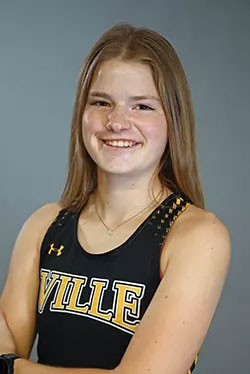

Kaelyn Samaha's Portfolio for AENG 110 Class |
||
| Home Print Project Photo Project Video Project Infographic Project | ||
|
Home Print Project Photo Project Video Project Infographic Project |

Runner at Millersville University |
Hello, my name is Kaelyn Samaha. I'm currently a student-athlete at Millersville University. A member of the Millersville women's cross country, indoor track and outdoor track team. My current major is Technology and Engineering Education. I'm also a member of the Technology and Engineering Education Association (TEECA) club. I chose Millersville University to continue my education because the Tech Ed program has a lot of opportunities to get involved but also has classes around my interest. |
|
©2024 Kaelyn Samaha |
||